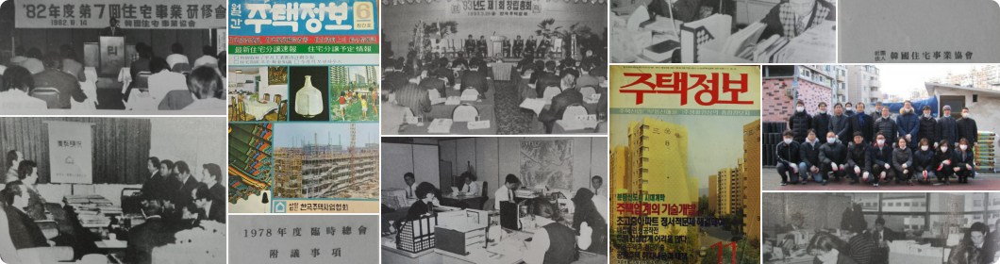

- 2022.09.23 제14대 윤영준 회장
- 2019.11.18 협회, 분양대행자 교육기관으로 지정
- 2019.03.30 제13대 김대철 회장
- 2019.02.20 협회 직제개편(4본부 8팀)
- 2018.03.21 제12대 김대철 회장
- 2017.10.20 분당 주택공원전시관 성남시 반환
- 2016.05.24 제11대 김한기 회장
- 2014.09.17 협회 직제개편(4실) 및 팀장직 신설
- 2013.03.28 제10대 박창민 회장
- 2012.07.18 협회 직제개편(3실 1팀)
- 2012.03.21 제9대 박창민 회장
- 2011.08.31 제1협회, 이전기관 종사자를 위한 특별공급 청약업무 대행기관 지정4대
- 2010.03.30 제8대 김중겸 회장
- 2009.03.25 제7대 김정중 회장
- 2008.12.28 월간 Housing & People 폐간 및 계간 주택회보 발간
- 2008.07.14 협회 직제개편(4실)
- 2007.03.30 제6대 신 훈 회장
- 2006.01.17 월간 주택회보, Housing & People로 명칭 변경
- 2004.03.24 제5대 이방주 회장
- 2003.12.15 협회, 정부권한위탁업무 수행기관으로 지정
- 2002.10.31 협회 직제개편(1실 4팀)
- 2001.03.24 제4대 이중근 회장
- 1999.03.24 제3대 이순목 회장
- 1996.06.01 협회 직제개편(2실 4부 2팀)
- 1996.03.23 제2대 이충길 회장
- 1993.05.31 분당 주택공원전시관 개관
- 1993.05.17 주택건설촉진법에 따라 법정법인 한국주택협회 설립
- 1993.05.11 주택건설촉진법 시행령 개정에 따라 (사)한국주택사업협회 해산
- 1993.04.23 건설부, 한국주택협회 설립인가
- 1993.03.26 한국주택협회 창립총회 개최 및 초대회장 류근창 선출
- 1992.03.11 제8대 류근창 회장
- 1990.04.15 월간 주택회보 발간
- 1989.03.09 제7대 류근창 회장
- 1986.08.28 건축자재전시관 개관(건설회관 1층)
- 1986.06.18 주택정보센터관 개관(건설회관 2층)
- 1986.04.18 협회 사무소 이전(삼호빌딩 → 건설회관)
- 1986.03.10 제6대 류근창 회장
- 1984.07.03 제5대 최종성 회장
- 1982.06.09 제4대 최종성 회장
- 1980.07.11 제3대 최종성 회장
- 1979.04.04 문화공보부에 월간 주택정보 등록 및 창간호 발간
- 1979.02.12 주택산업정보 전달과 주거생활 향상을 위해 주택정보센터 설치
- 1978.10.17 1국(사무국), 1실(기획관리실), 2부(총무부·진흥부) 직제
- 1978.09.15 제2대 최종성 회장
- 1978.06.14 (사)한국주택사업협회 설립등기
- 1978.05.29 건설부, (사)한국주택사업협회로 명칭 변경하여 설립허가(초대 김형종 회장)
- 1978.04.12 (사)한국주택건설협회, 건설부 설립허가 신청